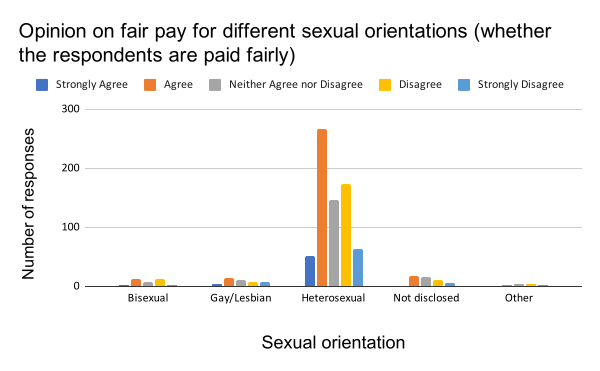
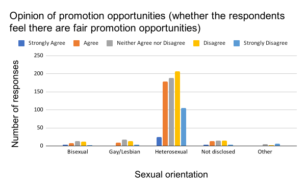
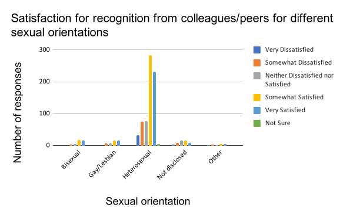
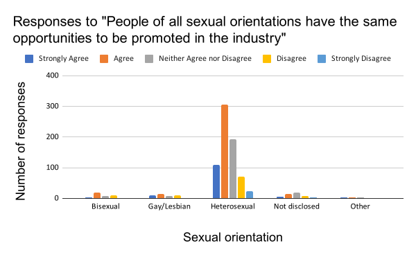

Below are some charts using the data collected from previous studies on the issue.
Results of the 2008 General Social Survey by the University of Chicago indicate that employees who are part of the LGBT community, with their status either known or not, suffer from both harassment and discrimination at work. This is especially the case for those who have "come out", either voluntarily or not, to their co-workers.
While it can be noted that for those who were yet to be "out" at work, both the harassment/discrimination and job loss rates are significantly lower, an issue persists. As noted in the Legal Protection page, LGBT employees have protection statutes, meaning that they should not have to be worried about whether their status community is known to other co-workers or not.
Below are some other figures on the opinions of LGBT employees, as well as the cisgender-heterosexual majority, on a few workplace issues. The data here is collected by the 2018 Workplace Equity Survey. It is worth noting here that the "Not disclosed" responses, as shown in the charts below, only indicate that the respondents chose not to disclose their sexual orientation in the survey; they might otherwise have disclosed it at work. That also means that those who identified as non-heterosexuals in the survey had not necessarily come out at work.
Generally, the participants of the survey believed they had been paid fairly at the time of data collection. For the LGBT population, there seems to be a smaller discrepancy between agreement and disagreement with this assumed existence of fair pay, but on the other hand, the number of LGBT respondents in this survey is honestly outnumbered by that of the heterosexuals. This great difference in responses by the 2 communities will continue to be observed in the charts further below. That being said, this great mismatch in numbers of responses collected is not necessarily an innate flaw of the survey; the reality is that the LGBT community is still very much a minority in the modern world.
For this question, the overall opinion seems to divided. The majority of the respondents — regardless of sexual orientation — believed that there were not really fair promotion opportunities. A potentially surprising observation here is that heterosexual employees appeared to be more sensitive to unfair promotions than those with non-conforming sexual orientations, but of course this pattern could be different had we had more data from LGBT employees.
Again, the discrepancy between two ends of the agreement-disagreement spectrum is much smaller among employees with non-heterosexual sexual orientations. It should be noted here, however, that "recognition" does not pertain exclusively to acknowledgement of one's sexual orientation or status in the LGBT community; it can simply refer to recognition of one's professional acumen or networking abilities. Unfortunately the survey did not go into details about this recognition.
At the first glance, the general trend of the responses seem to be towards agreement with the statement. However, it is possible to notice that the agree-disagree ratio is much closer to 1 among non-heterosexual respondents. It is also unfortunate here that the survey did not specify whether respondents were supposed to look at that statement as a factual one or one of personal conviction.